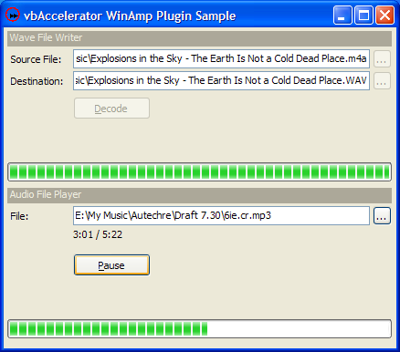

VB5 Winamp Plugin Client (65K)
VB5 Winamp Plugin Client (65K)
 VB6 Winamp Plugin Client (62K)
VB6 Winamp Plugin Client (62K)
 Winamp Plugin Wrapper (40K)
Winamp Plugin Wrapper (40K)
 Winamp Plugins (344K)
Winamp Plugins (344K)
 12 Jun 2004
12 Jun 2004
First Posted
 Subclassing Without The Crashes
Subclassing Without The Crashes

Using WinAmp In Plugins From VB
Play and Decode MP3, MP4/AAC, Ogg Vorbis and many more music file formats
Winamp is one of the better music player applications out there, and one of the neat features is its extensive support for plugins, most of which are developed and made available independently from Winamp. This article provides a small DLL and source which allows you to use these plugins to play and convert audio files relatively easily from VB. It has been tested with the MP3, MP4/AAC, APE (Monkey's Audio) and Ogg Vorbis plugins; it should work fine with the other plugins for more esoteric tracker and console formats out there too.
About The Sample
The sample includes a wave writer and a rudimentary player. To use it, first choose whether you want the VB5 or VB6 compile and download that. Then, unzip the DLLs in the Winamp Plugins so they are in a subdirectory from the demonstration executable called "Plugins" (this zip includes the MP3, MP4 and Monkey's Audio plugins; if you already have Winamp then you can just copy it's plugin directory, or you can get them elsewhere on the Internet as described later on in the article). Finally, extract WinAmpPluginWrapper.DLL from the Winamp Plugin Wrapper download and put this into the executable or (if you want to run in the IDE) Windows\System directory. As with other VB samples on the site, you'll need the Subclassing and Timer Assistant for the playing functions.
The Winamp Plugin Wrapper
I had the idea of writing a wrapper for Winamp plugins approximately two years ago, when I was idling around with the XAudio and Winamp SDKs. However, I can't say I got that far. Winamp's In plugins run on a separate thread, and the fifteen-thousand member structure which contains *everything* the plugin can do is documented (unsurprisingly) from the perspective of a plugin author rather than a from someone who wishes to call the plugin. For example:
// call after opening audio device with max latency in ms and samplerate void (*SAVSADeInit)(); // call in Stop() // simple vis supplying mode void (*SAAddPCMData)(void *PCMData, int nch, int bps, int timestamp);
Excerpt of IN2.H from Winamp SDK
So I put the project on hold and drank beer for a while, until I noticed that CDEx included some code for using the plugins. Aha... After a particularly painful day at work debugging a piece of code that I'd written which was supposed to settle a trade but instead mainly threw an exception and refused, I thought something a bit more relaxing was in order. To say I was astounded when after only the second attempt I managed to create a DLL which compiled, and could even be called from VB, would be an understatement. Perhaps the fundamental laws of the universe have subtly changed, I am not sure.
Anyway, the WinAmpPluginWrapper.DLL is the result. It draws heavily from CDEx's ISndWinAmpStream and associated classes, although it includes some changes to ensure completion events are raised when playing VBR encoded MP3 files. ISndWinAmpStream provides functionality for loading plugins and buffering the encoded data in a FIFO buffer, from where it can be used from non-threaded applications. If you're interested in the source code, the download include a VS.NET solution which you should be able to compile without problems; otherwise just take the DLL from the Release directory and put it into your Windows\System directory before running.
The main methods of the Wrapper DLL are:
- Initialise(ByVal hWnd As Long, ByVal strPath As String) As Long
This method must be called before any other methods in the DLL are called. It reads all of the Winamp in plugins from the specified path (this works by virtue of all WinAmp plugins having a filename of the form "in_*.dll") and returns a count of the plugins found.
- CleanUp
Allows all plugins to be unloaded cleanly. It is not necessary to call this method but it can be called prior to ending an application.
- OpenStream(ByVal strPath As String) As Long
Opens a decoding stream for the specified file. The wrapper DLL will locate an appropriate plugin for the file and return non-zero if successful.
- GetBufferSize() As Long
The user of the DLL is responsible for allocating a memory buffer for the data which is read. This function returns the buffer size to use. Note that this size is an upper bound of the size which is required; normally not all of the buffer size is needed. Typically, a Winamp plugin decodes in chunks of 4608 bytes and the DLL will request a buffer size of 9000 bytes.
- Read(pbData As Any, ByVal dwNumBytes As Long) As Long
Decodes a chunk of data from the stream and puts the result into the memory buffer pbData. The size of the chunk is returned and dwNumBytes parameter specifies the size of the buffer. Note that the number of bytes read may (and normally will) be less than the size of the buffer, which must be set to the size returned by GetBufferSize.
- GetTrackTotalTime() As Long
Provides the total length of the track in milliseconds. This can be used in combination with GetSampleRate, GetChannels to determine the total length of the track in bytes (assuming playback at 16 bit):
m_lTotalBytes = ((GetTrackTotalTime() * 1#) * _ (GetSampleRate() * 1#) * GetChannels() * 2) / 1000#You can use this along with the number of bytes read from the Read method to provide a progress report (there is also a GetTrackCurrentTime method, but in practice this doesn't always return a reliable answer with all plugins).
- SeekStream(ByVal lOff As long, ByVal nFrom As Long) As Long
Seeks to the specified offset in the stream, from the starting point specified in nFrom.
- CloseStream() As Long
Closes a stream previously opened using OpenStream.
Using From VB
These exports are wrapped in the sample in a VB class, cWinAmpAudioConverter, which is a thin wrapper around the DLL with the primary function of managing the buffers used for reading chunks of audio data. The methods of the DLL are as follows:
- Init
Initialises the class for use and reads the Winamp plugins from the specified path. No other methods will work until this method has been called.
- OpenFile
Opens a file for decoding. Returns True if successful, False otherwise.
- FileIsOpen
Gets whether a file is currently open or not.
- CloseFile
Closes a file previously opened using OpenFile. Called automatically if another file is opened or the class is terminated.
- ConvertChunk
Converts a chunk of data from the currently open file. Returns the size of the data read; this will be zero if no file is open or there is no data remaining. The class maintains multiple internal buffers so you can also specify which buffer to read the data into, and also by default reads multiple chunks in one read (configured through the CHUNKS_PER_READ constant).
- ReadBufferPtr
Gets the pointer to a memory buffer.
- BufferCount
Returns the number of buffers available to read data into, configured through the BUFFER_COUNT constant.
- TrackSeek
Seeks to the specified time in milliseconds from the start of the file.
- TrackCurrentTime, TrackTotalTime
Gets the current and total time of the currently opened track in milliseconds.
- SampleRate, Channels
Gets the sample rate and number of audio channels for the current track.
About The Wave File Converter
The wave file converter class, implemented in cConverterWaveWriter, allows decoded audio from the cWinAmpAudioConverter class to be written to a Wave File. This code is just a converter between the Winamp converter and the cWavFileDataWriter class provided in the CD Ripper sample. It contains two methods and one event:
- Filename
Gets/sets the filename of the Wave File to write to.
- Decode
Takes a cWinAmpAudioConverter and converts the entire file to a Wave file. Whilst the conversion is occurring, the class fires Progress events which indicate the percentage complete and provide an opportunity to cancel the conversion using the bCancel property.
Using the converter is therefore pretty simple. You just need an instance of the cWinAmpAudioConverter and a WithEvents instance of the converter, as follows:
Private m_cConverter As cWinAmpAudioConverter
Private WithEvents m_cWaveConverter As cConverterWaveWriter
Private Sub Form_Load()
Me.Show
Me.Refresh
Set m_cConverter = New cWinAmpAudioConverter
m_cConverter.Init PluginDir, Me.hWnd
If (m_cConverter.PluginCount = 0) Then
MsgBox "No plugins could be loaded from the directory " _
& PluginDir, vbExclamation
End If
Set m_cWaveConverter = New cConverterWaveWriter
End Sub
Private Sub Convert(ByVal sFileIn As String, ByVal sFileOut As String)
If (m_cConverter.OpenFile(sFile)) Then
m_cWaveConverter.Filename = sFileOut
m_cWaveConverter.Decode m_cConverter
End If
End Sub
Private Sub m_cWaveConverter_Progress( _
ByVal lPercentDone As Long, bCancel As Boolean)
' Show progress and set cancel flag as required
End Sub
About The Player
The player provided in this sample is really only there to demonstrate that the technique works. It uses the Windows Multimedia APIs to stream data to the soundcard using the method presented in the Streaming .WAV File Player article. To do this properly you need to use DirectSound instead (subject of a forthcoming sample); my sample uses posted messages to queue more music onto the output buffer, and playback can be persuaded to break-up if you do something which fills the message queue (for example, rapidly dragging another Window around over the top of the player's form). Alternatively, you can exclusively play tracks by Kid606, in which case you'll probably never notice a problem.
As noted before, Winamp plugins typically decode data in chunks of 4608 bytes, which at CD quality (44.1kHz 16 bit stereo) equates to about 26ms. That's good for playback latency but a bit too quick for the Windows message loop. Hence for the sample I've chunked the reads into blocks of 104ms, which still seems pretty responsive, and ends up using less than 3% CPU on my Athlon 2000 (playing "99 Problems" from Dangermouse's ace "The Grey Album" at the moment, which you probably didn't need to know). Mileage may vary on other machines, however.
The streaming audio player is implemented by the cConverterWavePlayer adapter class. This class takes a cWinAmpAudioConverter as a parameter to the PlayFile method. Playback can be paused and restarted using the Pause method and stopped completely using the StopPlay (should be "Stop" but VB won't let you) method. Currently seeking is not implemented but it shouldn't be hard to do.
Note that there is an issue with the Winamp plugin implementation for VBR encoded MP3 files. The length of the file is incorrectly reported at the start of playback; you can see this occurring in Winamp as well, which reports these tracks as being three or four times their actual length in the playlist, and the seek slider is inaccurate to start with. As playback progresses, the track length becomes more accurate, but only ever approximates the actual length of the track.
On Windows Media
There are some other ways to get to the same result as this article. For example, DirectMusic includes a way to play MP3 and WMx files with about two lines of code; it may well work with MP4 files as well. However, there's something about parts of DirectX Audio and all Windows Media Player technologies which just gives me a bad feeling. Probably a combination of the licence agreement (the stuff on your hard disk is not yours), that it is *so* hard to find a Codec that you don't have, the fact that Media Player is *always* bitching about not having a suitable Codec and it needs to be online to find one (and usually it can't), that encoding to WMA sometimes incomprehensibly results in private licence keys being embedded so you can't ever use the file again and the fact that all the Media Player skins are so laughably rubbish...
...may have something to do with it. Not just that, but what happens when you want to use your Linux machine to play the stuff instead? Where's the spec? Is it free? Where's the cool open-source version that works better?
Anyway, each to their own. Personally I find quite a few of Microsoft's technologies over-prescriptive about how they can be used, or by whom, and that means I can't be happy with them however good (or otherwise) the underlying technology may be. Perhaps if I wasn't so retentive, particularly about music, I could get over it...
Conclusion
This article demonstrates how to use Winamp input plugins from VB to convert various audio formats (including MP4, MP3 and Monkey's Audio) to wave data. The resulting code is more than efficient enough to use for realtime playing (it decodes a 3 minute MP3 to a WAV file in about 4 seconds on my machine).